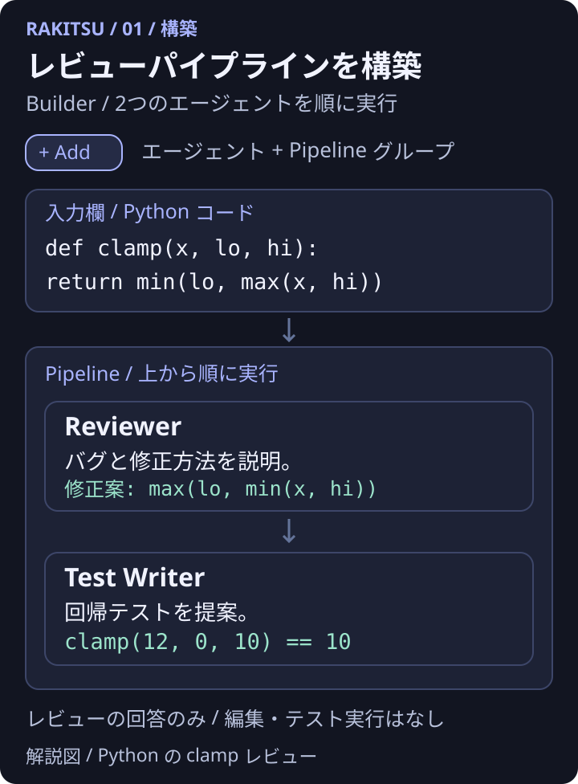
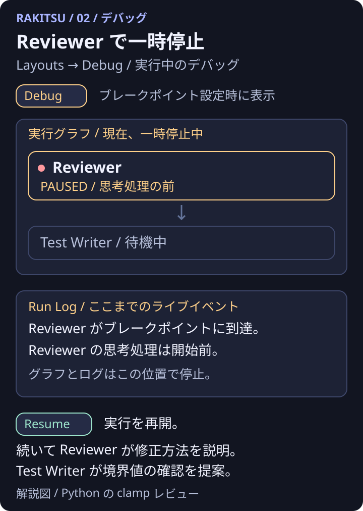
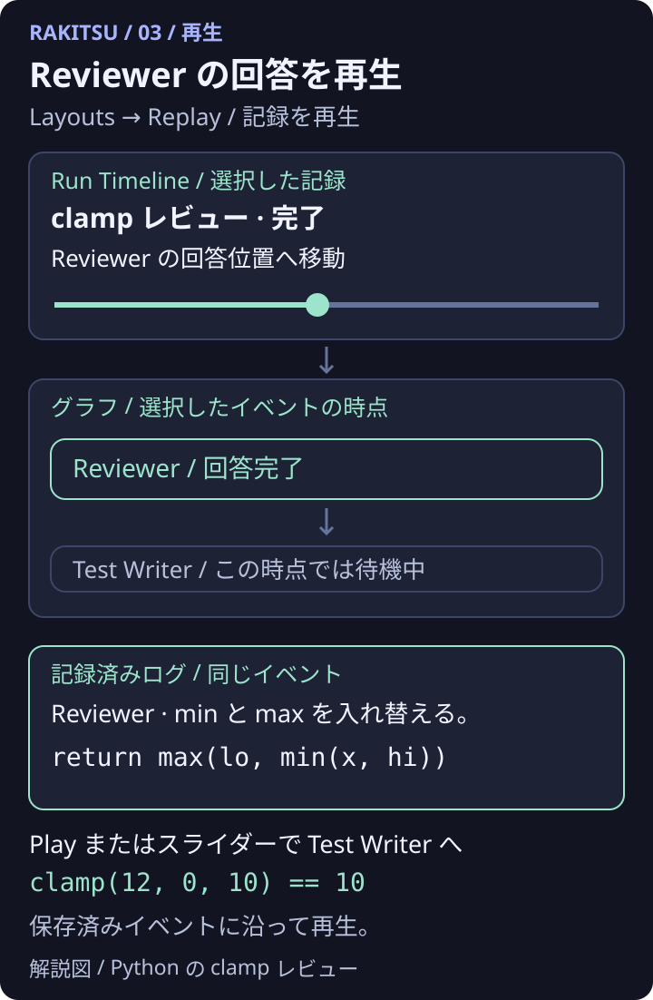

English | 日本語
Rakitsu Web UIマニュアル
概要
このマニュアルは 0.4.0 開発版のワークスペースを説明します。
Rakitsu の Web UI は、rakitsu serve で起動する多機能なエージェントIDEです。ワークスペースには、ドッキング可能な7つのパネルがあります。
- Builder — ドラッグ＆ドロップでエージェントを視覚的に設定
- Debugger — ブレークポイントを使ったリアルタイムの実行監視
- Inspector — イベントストリームの表示
- Sessions — セッション履歴の表示と確認
- Chat — エージェントとの対話
- Run Log — 最新の実行、選択したセッション、または受信した全イベントの表示
- Run Timeline — 記録した実行の再生とイベントの詳細表示
UIを起動します。
rakitsu serve --port 9100
# http://localhost:9100 を開く
初回起動で設定一覧が空の場合： serve は、実行したディレクトリを基準に .、./examples、./configs（または --config-dir）で見つかった設定だけを表示します。まだプロジェクトがなければ、先に rakitsu quickstart を実行してください。自分で設定を書く前に examples/ から1つ選んでUIを試すこともできます。
ワークスペースのレイアウト
Layouts → Debug を選ぶと、Builder の隣に Debugger の Block グラフ、その下に Run Log と Run Timeline が配置されます。ログは別のソースを選ぶまで、Web UIでの最新の実行に追従します。Layouts → Replay では実行グラフを広く表示できます。Run Timeline で記録を選び、Play またはスライダーを使うと、グラフと記録済みログの表示位置が連動して移動します。プリセットを切り替えても、選択中の記録と再生位置は保持されます。狭いウィンドウではパネルが縦に並びます。
各パネルの ⋯ メニューで、フロート表示、ドッキング、最大化、別のタブグループへの移動ができます。タブまたはフロート表示のタイトルバーをドラッグすると、所定の位置にスナップします。 Builder では入力欄の山形アイコンでプロンプトの操作領域を折りたたみ、キャンバスを広げられます。再び開くときもプロンプトと実行設定は保持されます。Builder のフッターには最近の実行が表示されます。
0.4.0 Web UIの操作動画を見る。 Builder のパイプライン、Debug レイアウトでのブレークポイント、Replay レイアウトでの記録の再生を紹介しています。
Python コードレビューのワークフロー例
以下の解説図は、2つのエージェントによるレビューの流れを示します。録画では実際のワークスペースの操作を紹介しており、エージェントなしで動く別の Retrieval → Decision パイプラインも登場します。
-
2つのステップを作成する。 Settings でプロバイダーとモデルを設定します。+ Add で Orchestrator、Pipeline グループ、Reviewer と Test Writer という名前の2つのエージェントを作成します。Orchestrator をグループに接続します。両エージェントをグループ内へドラッグし、Add to group で確定してください。Reviewer を Test Writer より上に置くと、Pipeline グループがその順に実行します。Reviewer にはバグと修正方法の説明、Test Writer にはレビューをもとにした回帰テストの提案を指示します。Builder の入力欄に次の Python コードを入力してください。
def clamp(x, lo, hi): return min(lo, max(x, hi))minとmaxの呼び出しが逆になっています。意図する修正はmax(lo, min(x, hi))、テスト案はclamp(12, 0, 10) == 10です。エージェントは回答の中で修正とテストを提案します。
-
実行中にデバッグする。 Reviewer の Builder コンテキストメニューで Break before thought を選びます。ブレークポイントを設定すると、入力欄に Debug が表示されます。Layouts → Debug を選び、Debug で開始してください。ブレークポイントで停止したら、グラフ内の Reviewer と、それまでに Run Log が受信したイベントを確認します。この時点では Reviewer の思考処理はまだ始まっておらず、Test Writer も待機中です。Resume をクリックすると実行が再開します。記録を再生できるように、両ステップを最後まで実行してください。

-
完了した記録を再生する。 Layouts → Replay を選び、Run Timeline で完了した実行を選択します。スライダーを Reviewer の回答完了位置まで動かしてください。グラフと記録済みの Run Log は同じイベントに追従します。その時点では Reviewer が修正方法を説明済みで、Test Writer はまだ待機中です。Play またはスライダーで先へ進むと、Test Writer が提案した
clamp(12, 0, 10) == 10の確認を見られます。再生は、保存済みイベントの閲覧位置を移動する操作です。
Visual Builder
+ Add からノードやグループを作成します。アイコンにカーソルを合わせると操作名が表示されます。Tab で + Add 内の選択肢に移動でき、Esc で閉じるとボタンにフォーカスが戻ります。入力欄には Run、ブレークポイントがある場合は Debug が表示されます。
ツールバーの SVG workbench preview でキャンバスを切り替えます。Classic canvas で既定の表示に戻ります。Arrange は SVG プレビューを左から右へ整列します。グループの折りたたみボタン、またはツールバーの Fold all / Unfold all を使えます。
実行を開始すると Builder は Execution Path を開きます。実行中に設定済みのグラフを見るには Show Workflow を使います。実行後は Back to Canvas で編集に戻り、Show Results で実行グラフを再表示できます。
キャンバスの基本操作
| 操作 | 方法 |
|---|---|
| キャンバスを移動 | 空白部分をクリックしてドラッグ |
| ズーム | マウスホイールまたはピンチ操作 |
| 全体を表示 | 左下の操作ボタンにある fit-view をクリック |
| ノードを追加 | + Add を開き、Agent、Tool、Skill、Orchestrator を選択 |
| ノードを移動 | ノードをクリックしてドラッグ |
| ノードを接続 | 接続元のハンドルから接続先のハンドルへドラッグ |
| ノードを編集 | ノードをクリックしてサイドパネルのエディターを開く |
| ノードを削除 | ノードを選択し、Delete または Backspace |
| 右クリックメニュー | ノードを右クリックしてコンテキスト操作を表示 |
ノードの種類
| 種類 | 用途 | 接続ハンドル |
|---|---|---|
| Agent | LLMを使うワーカーまたは監督役 | 入力（上）、ツール・スキルへの出力（下） |
| Tool | CLIコマンド、ファイル操作、MCPサーバー呼び出し、A2A委任 | 入力（上） |
| Skill | 再利用できるツールとプロンプトの組み合わせ | 入力（上） |
| Orchestrator | エージェントの連携戦略を管理 | 入力（上）、エージェントへの出力（下） |
| Group | ノードをまとめるコンテナー | 入力（上）、出力（下） |
| Decision | 型付きの質問を行い、エージェントのステップへ振り分け可能 | 分岐の接続線は Decision の設定から生成 |
| Retrieval | ローカルの文書群を検索し、出典付きの抜粋を返す | 検索結果を使う設定の Decision に根拠の接続線でつなぐ |
Pipeline グループを選択すると、+ Add で Decision と Retrieval が選べます。
Decision エディターではバックエンド、質問、振り分け先を設定します。
Retrieval エディターでは文書群のディレクトリを設定し、RAKITSU_RETRIEVAL_ROOT を承認済みの文書群に向けて rakitsu serve を起動してください。根拠の入力ルールはパイプラインのリファレンスを参照してください。
接続ルール
| 接続元 | 接続できる対象 |
|---|---|
| Orchestrator | Agent、Orchestrator、Group |
| Agent | Tool、Skill、Agent、Orchestrator、Group |
| Group | Agent、Tool、Skill、Orchestrator、Group |
| Tool | 末端ノード。出力接続なし |
| Skill | 末端ノード。出力接続なし |
複数選択
| 操作 | 方法 |
|---|---|
| 範囲選択 | キャンバスの空白部分で Shift + drag |
| ノードの選択を切り替え | Cmd + click（Mac）/ Ctrl + click（Win） |
| 同じ階層をすべて選択 | Shift+drag で現在のスコープ内の全ノードを囲む |
| 選択をすべて解除 | キャンバスの空白部分をクリック、または Escape |
一括操作
複数のノードを選択すると Bulk Edit パネルが表示されます。
- 選択したノードの数と種類を表示
- すべて同じ種類（すべて Agent など）なら、共通フィールド（プロバイダー、モデル）を編集可能
- Duplicate — 選択した全ノードと、その間の接続線を複製
- Delete — 確認後、選択した全ノードを削除
ブロックプログラミング（グループ）
グループの作成
| 方法 | 操作 |
|---|---|
| 空のグループ | + Add を開き、Pipeline、Parallel、Team、Loop、Group を選択 |
| 選択したノードをグループ化 | 2つ以上のノードを選び、Group selection アイコンを使用 |
| 右クリックメニュー | 複数選択 → 右クリック → "Group as Pipeline/Parallel/Team" |
グループの種類
| 種類 | 色 | 実行上の意味 |
|---|---|---|
| Pipeline | 青 | 子ノードを上から下へ順に実行 |
| Parallel | 緑 | 子ノードを並列に実行 |
| Team | ピンク | オーケストレーターが子ノードを階層的に管理 |
| Generic | グレー | 見た目上のグループ化のみ。実行動作への影響なし |
グループへノードを追加
| 方法 | 操作 |
|---|---|
| ドラッグ＆ドロップ | ノードをグループに重ねて離し、重ねて表示されるメニューで "Add to group" |
| 入れ子のグループ | ノードを入れ子のグループに重ねると、該当する最も深いグループが対象 |
| 親グループを変更 | ノードを別のグループへドラッグして移動 |
ドラッグ中、対象のグループは青く光って強調表示され、配置先を示します。
グループからノードを取り出す
| 方法 | 操作 |
|---|---|
| グループを解除 | グループを選択 → Ungroup をクリック、または右クリック → Ungroup |
| 外へドラッグ | 先にグループのスコープに入り、ノードを外へドラッグ |
グループの特性
- サイズ変更可能 — グループを選択し、角や辺のハンドルをドラッグ
- 最小サイズ — 250 × 120 ピクセル
- 接続可能 — 接続線用の入出力ハンドルを持つ
スコープに基づく選択
選択操作は、Maya や Figma のように階層ごとのスコープに従います。
スコープ間の移動
キャンバス上部中央にスコープウィジェットが表示されます。
[ Canvas ] | Enter: [ Pipeline ] [ Team ] ← 最上位
[ Canvas ] / [ Pipeline ] [ ↑ Up ] ← Pipeline の内部
[ Canvas ] / [ Pipeline ] / [ Parallel ] [ ↑ Up ] ← 入れ子
| 操作 | 方法 |
|---|---|
| グループに入る | グループをダブルクリック、またはスコープウィジェット内の名前をクリック |
| グループから出る | Escape、↑ Up、またはスコープのパス内の親をクリック |
| 最上位へ移動 | スコープウィジェットの Canvas をクリック |
選択ルール
- 同じ階層だけ — 現在のスコープと同じ階層のノードだけを選択できます
- 親の選択を優先 — グループを選択している間、そのメンバーは個別に選択できません
- グループを選ぶと子孫の選択を解除 — 矛盾する選択を解消します
- グループも選択可能 — 現在の階層のグループを複数選択に含められます
- 種類の混在が可能 — 同じ階層ならグループと通常のノードを一緒に選べます
Settings パネル
ツールバーの歯車アイコンで開きます。
サービスプロバイダー
エージェントの設定前に、LLMプロバイダーを定義してください。
- + Add Service Provider をクリック
- Name を設定（例："my-openai"、"litellm-proxy"）
- Type を設定（openai、anthropic、gemini、ollama、litellm）
- Default Model を設定。base_url が設定済みならプロキシから自動検出
- 必要に応じて API Key と Base URL を設定
既定値
- Default Provider — 定義済みのプロバイダーだけを選択肢に表示
- Default Model — 既定のプロバイダーから自動検出
- Temperature、Max Tokens — 継承と上書きの仕組みを通じてエージェントに適用
継承と上書き
自動入力される値はすべて、継承と上書きの仕組みに従います。
| バッジ | 意味 |
|---|---|
| inherited（青） | 値が継承元（プロバイダーの既定モデルなど）と同期 |
| reset ボタン | 手動の上書きを取り消し、継承した値に戻す |
継承できるフィールド：
model← プロバイダーの default_modeltemperature← settings.defaults.temperaturemax_tokens← settings.defaults.max_tokensmax_iterations← settings.execution.max_iterationstimeout← settings.execution.timeout_seconds
継承元（プロバイダーの既定モデルなど）を変更すると、継承中の全エージェントが自動更新されます。手動で上書きした値は変更されません。
参照の整合性
すべての要素は内部用の安定したID（_id）を持ちます。名前を変更しても参照は保たれます。
| 名前の変更対象 | 自動更新される参照 |
|---|---|
| プロバイダー | 全エージェントとオーケストレーターの provider |
| ツール | 全エージェントと全スキルの tools[] |
| スキル | 全エージェントの skills[] |
| エージェント | オーケストレーターの agents[]、パイプラインステップの agent |
YAMLのエクスポート時にIDを除去するため、内部メタデータのない設定を出力できます。
ノードエディター
ノードをクリックすると、サイドパネルにエディターが開きます。
Agent のフィールド
| フィールド | 説明 |
|---|---|
| Name | エージェントの識別名（YAMLと参照で使用） |
| Role | worker または supervisor |
| Provider | 定義済みのプロバイダーから選択 |
| Model | プロバイダーから自動検出、または任意の値を入力 |
| System Prompt | エージェントへの指示（複数行テキスト） |
| Tools | キャンバス上のツールをチップで複数選択、または任意の値を入力 |
| Skills | キャンバス上のスキルをチップで複数選択 |
| Vision | 画像入力への対応を有効化 |
| Model Config | Temperature、max tokens、top P、ペナルティ |
| Agent Settings | 最大反復回数、タイムアウト、振り返り、根拠確認 |
ComboBox のドロップダウン
すべてのドロップダウンは独自の ComboBox コンポーネントを使います。
- クリックすると全選択肢を表示
- 入力すると絞り込み（入力文字が順番どおりに含まれる候補に逐次一致）
- A/F ボタンで全表示（All）と絞り込み（Filter）を切り替え
- 任意の値も入力可能（入力して Enter）
Debugger
モード
| モード | 説明 |
|---|---|
| Run | エージェントを実行し、イベントを配信（デバッグの追加負荷なし） |
| Debug | デバッガーを接続。ブレークポイント、一時停止・再開、パラメーターの上書きが可能 |
セッションパネル（右側）
- Live タブ — 実行中と最近の実行
- History タブ — JSONLのセッションストアに保存された過去のセッション
- Search — チップ形式で逐次絞り込み（名前、クエリ、エージェント、状態、設定パス）
- Delete — 確認付きの個別削除・一括削除
- サイズ変更可能 — 左端をドラッグして幅を調整
グラフの表示形式
Tree、Block ボタンで切り替えるか、ほかのグラフ形式を開きます。
| 形式 | 用途 |
|---|---|
| Tree | コンパクトな階層表示。最も詳細な情報 |
| Block | 実行カードと、実行の流れを視覚的に表示 |
| Timeline | 時間軸に沿った横方向の表示 |
| Mind Map | 放射状のレイアウト |
ブレークポイント
特定の位置で実行を停止するために設定します。
| 方法 | 操作 |
|---|---|
| ブレークポイントバー | ツールバーでイベントの種類とエージェント名を選択 |
| ツリーのコンテキストメニュー | ノードを右クリック → "Set Breakpoint" |
| インラインボタン | ツリーのノードを選択 → BP |
| Builder のコンテキストメニュー | エージェントを右クリック → "Break before thought/tool/agent" |
対応するチェックポイント：
AGENT_START、THOUGHT_START、THOUGHT_END、TOOL_CALL_START、REFLECTION_START、GROUND_CHECK_START、PIPELINE_STEP_START
一時停止中の操作
| 操作 | 説明 |
|---|---|
| Resume | 通常どおり実行を再開 |
| Step | 次のチェックポイントまで進む |
| Step In | 次のサブエージェントに入る |
| Step Out | 現在のエージェントを抜けるまで再開 |
| Run to Here | 指定したノードまで再開 |
| Stop | 実行をキャンセル |
ノードの状態表示
| 表示 | 意味 |
|---|---|
| オレンジ色に脈動する背景 | 一時停止中 |
| ⏸ アイコンと "PAUSED" バッジ | このノードで停止中 |
| 余白の赤い点 | このエージェントにブレークポイントを設定済み |
| 緑の背景とスピナー | 実行中 |
| ライブの状態行 | エージェントの現在の処理（テキスト配信、ツール呼び出しなど） |
デバッグ中に設定を試す
一時停止中に Detail Panel でパラメーターを上書きできます。
- System Prompt — エージェントの指示を変更
- Max Iterations — 反復回数の上限を変更
- Tools — 個別のツールを有効化・無効化
- Sticky — 上書きを再開後も保持するか、1回だけ適用するかを切り替え
履歴からのデバッグ
| 操作 | 場所 | 動作 |
|---|---|---|
| Run to Here | ツリーノード（実行中のデバッグ） | そのノードに到達するまで再開 |
| Debug from Here | ツリーノード（履歴） | デバッグモードでセッションを再実行し、そのノードで停止 |
| Rerun | セッションパネル | 過去のセッションを再実行 |
| Inspect in Builder | セッションパネル | セッションの設定をビジュアルビルダーに読み込み |
インポートとエクスポート
インポート
| 形式 | 操作 |
|---|---|
| 単一のYAML | Import → Import YAML |
| モジュール構成のディレクトリ | Import → Import Directory |
| ひな形テンプレート | Scaffold からプリセットを選択 |
エクスポート
| 形式 | 操作 |
|---|---|
| 単一のYAML | Export → Export YAML |
| モジュール構成のZIP | Export → Export Modular (ZIP) |
内部フィールド（_id、_providerId、_inherited）はエクスポート時に自動で除去します。
パイプラインのインポート
orchestrator.strategy: Pipeline の設定をインポートすると、次のように変換されます。
- パイプラインのステップは Pipeline グループのブロックに変換
- 並列ステップは入れ子の Parallel グループのブロックに変換
- エージェントは対応するグループの内部に配置
環境変数
Run ダイアログで、エージェント実行用の環境変数を設定できます。
- Environment セクションにキーと値の組を追加
- 変数はその実行だけに適用（サーバープロセスには設定されません）
- YAML設定では
${VAR_NAME}で参照
キーボードショートカット
| キー | 操作 |
|---|---|
| Delete / Backspace | 選択したノードを削除 |
| Escape | グループのスコープから出る / 選択をすべて解除 |
| Shift + drag | 複数ノードを範囲選択 |
| Cmd + click | 複数選択でノードの選択状態を切り替え |
| グループをダブルクリック | グループのスコープに入る |
| Cmd + Enter | 実行（Run ダイアログ内） |
ワークスペースのディレクトリ
ツールを実行する作業ディレクトリを設定します。
- Builder の Run ダイアログ — workspace フィールド。空の場合はオレンジ色の警告
- RunLauncher（セッションパネル）— 同じフィールド
- ツールはこのディレクトリを基準に実行
- セッション内では次の実行にも引き継ぎ
使い方のヒント
- Scaffold のテンプレートからすぐに開始できます
- Settings で先にプロバイダーを定義すると、エージェントのモデル一覧が自動入力されます
- 各プロバイダーの default_model を設定すると、新しいエージェントが自動で継承します
- Pipeline / Parallel グループで実行順を視覚的に表せます
- グループをダブルクリックして内部の子ノードを編集できます
- 継承で設定を同期できます。既定値へ戻すには "reset" を使います
- ノードを右クリックすると、ブレークポイント、複製、削除、グループ化などの操作をすぐに選べます